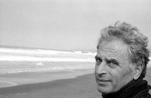
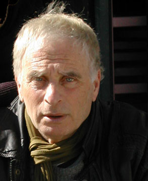
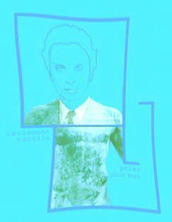
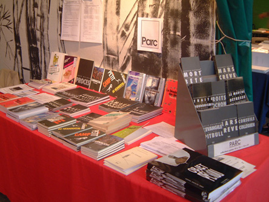
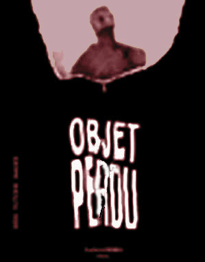
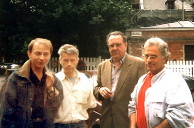

Quelques bribes biographiques de John Gelder...
 John Gelder éditeur & auteur 
- l'année où il quitta son deuxième métier - la Publicité (Gelder Safronoff Griswold) - après le Jazz ... -
à La Rose noire, Bruxelles, années mi-cinquante avec
Albert Nicholas - Johnny Gelder (Clarinette), Claude George (Trombone), Jean Jacques Laydu, W. Karels, (trompette), Buddy Moszkowicz au banjo, Gus Rongy (batterie.)
il fut le fondateur et l'animateur, avec feu Daniel Mauroc et Jean-Claude Hache. Paul Vermont compta dans son catalogue des auteurs comme Jean-François Dupuis/Raoul Vaneigem (Histoire désinvolte du surréalisme) - Claude Alexandre (Peaux d'hommes) - Claude Maillard, (Les Épaves) -Julien Torma (Euphorismes) - Philippe Mezescaze (Corps Océan), John.E. Orcan/Gelder, Yves Frémion, Daniel Mauroc, François Leperlier, Arkadi Arkanov, etc.. Voir le catalogue Paul Vermont encore disponible :
http://lacunar.org/Paul-Vermont-edition.html
 Un auteur "qui avance masqué..." (voir plus bas)
 Vue d'ensemble de quelques productions Paul Vermont et Parc
Photo: M. Livory
PARC (Promotion Arts & Culture) - émergea donc en 1993, créée par John Gelder, après qu'il se fût impliqué dans une entreprise de paysage haut de gamme (EVE -Espaces Verts Environnement), avec le regretté Edouard D'avdeew, LE paysagiste qui de 1968 à 1992 a sécoué le monde horticole tricolore alors en berne... De 1989 à 1992 Gelder anima les éditions Jean-Michel Place, (notamment La Revue d'Esthétique, qui s'endormait sur ses lauriers phénoménologiques "CONceptuels"). Il y poursuiva l'écriture (Facettes du Désastre), y publia des auteurs comme Jean-Michel Heimonet (Politiques de l'écriture -Bataille Derrida), Mikel Dufrenne, L'Øeil et l'Oreille, Boris Rybak, Où cours-tu primate? - collabora comme recenseur pour le Bulletin du livre français... lequel lui valut d'ntéressantes rencontres philosophiques, ethno-anthropo-paléontologiques, biologiques..; dont témoignent ses dernières oeuvres..
En 1993 Parc démarre avec la publication de deux ouvrages de fonds : un collectif majeur, Objet perdu (Idées-Images-Fictions) (coédition Parc/Lachenal-Ritter, 1995), et, dans un registre différent, la conception et la coordination éditoriale du très beau Dictionnaire de Armel Louis : Rimes et Assonances, qui fut édité en 1997 - pour le compte des Dictionnaires Le Robert - dans la collection les Usuels.
.
 Idées - Images - Fictions
- Avec plus de soixante auteurs (écrivains, essayistes, poètes) et artistes (peintres, photographes, sculpteurs), Objet Perdu - codirigé avec Fabrice Hadjadj, Michel Houellebecq, M. Tibbon-Cornillot, Stéphane Zagdansky - apporte un témoignage réflexif anthopo-philosophique, poétique, narratif et plastique autour du thème du corps déterritorialisé. Sa transdisciplinarité, la distance qu'il prend avec les démarches conventionnelles (approche, contenu, format et présentation) placent aujourd'hui ce document dans la catégorie des « ouvrages de fonds ».
 Avec Michel Houellebecq, William Cliff, Dominique Noguez, à Bruxelles, 1997.
Visitez ce catalogue
PARC-EDITION, 14 rue Émile Desvaux - 75019 Paris - Tél : 01 42 01 84 4è - Email: parc.edition@gmail.com
Comptoir de vente : La Lucarne des Ecrivains, 115 rue de l'Ourcq - Tél /Fax : 01 40 05 91 29 /55
PULICATIONS de l'auteur (sous le nom de/):
John Emile Orcan
L'Extorsionnaire,î, 1976, P. Vermont
Un voyageur solitaire est le diable, 1980, P. Vermont
L'Esprit des rats, 1981 Plasma
Orgiophantes de la chambe du fond, Edition du Fourneau ( Fornux), 1985
John Gelder
Procès,Parc, 1996
La Revanche du Néandertal, L'odyssée de l'espèce, Parc, 2001
Cossuaires, (essai sur les Quatrains de May Livory) Barde La Lézarde - Fol-Ivre, 2004
Sucer le miel aux creux des pierres, Desnel, 2007
Less is too much? Mies van der Rohe, l'Echappée Belle éditions, 2012
Passage Verlaine - le principe de moindre résistance, éditions Le Forgeur d'Etoiles (éd. Unicité), 2014
Autres publications Revues & Collectifs
Objet perdu — Idées - Fictions-Images (Collectif), Lachenal Parc.
La main de singe, N° 3, 1991/2, Compact
L'Aventure Humaine, D. Lecourt, 1995
Revues d'Esthétique, Pourquoi l'esthétique ? 1992
Arnaud (de) Gyl
Revue d'Esthétique, & la Danse, 1992
Objet perdu — Idées -Images -Fictions (Phylogenèse...)
Emil Georg
Le Marché de la détresse, Parc, 1998
cf.Institut de Management Public et Gouvernance TerritorialeUFR de l'Université Paul Cézanne - Aix Marseille III
Jacques Niesten
Essais sur le matérialisme négatif chez Nietzsche (Objet Perdu)
Johnny Gelder Jazz Band à "la Rose Noire" Bruxelles.
Postface de J-M. Heimonet pour "Facettes du désastre"
Préface D. Noguez ; "Factts du désastre"
Lecture A. Cadet-Petit de "Suces les miel au creux des pierres."
Lecture I. Dormion, postaface La Revanche du Néandetal.
Retour Lifetimes
Retour Accueil